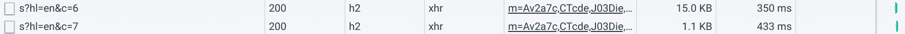

Mail
Joren Van Onder
Table of Contents
GMail has become slow
The GMail redesign was a while ago. I don't care much about the visual
changes. The main thing I dislike is how sluggish the interface has
become. Interacting with it no longer feels snappy and regularly I run
into blocking beforeunload handlers warning me I might lose data
when attempting to close the tab.

Figure 1: Archiving an email seemingly takes about a second before you can close the tab
Since the place I work at uses GSuite and there's a lot of email to go through in the morning I decided to stop using the GMail webclient.
The rest of this page describes my personal email setup.
Have you accepted GNU Emacs as your lord and savior?
I have and therefore decided on using Notmuch1. It has an official GNU Emacs client and it's simplicity makes it interesting and fun to use and configure. Because it's pretty minimalist in it's design an additional program is needed to synchronize your mail. The most popular choice for this is probably OfflineIMAP.
Approach
OfflineIMAP
OfflineIMAP will synchronize mail between GMail and a local maildir. Plenty can be found online on how to configure OfflineIMAP with GMail. Here's a basic configuration that downloads a couple of IMAP folders.
[general]
accounts = Gmail
pythonfile = ~/.config-git/mail/offlineimap.py
[Account Gmail]
localrepository = Local
remoterepository = Remote
[Repository Local]
type = Maildir
localfolders = ~/mail
[Repository Remote]
type = IMAP
remotehost = imap.gmail.com
remoteuser = user@example.com
remotepasseval = get_password_authinfo("imap.gmail.com", "user@example.com")
folderfilter = lambda foldername: foldername in ['INBOX', '[Gmail]/Trash', 'ArchivedMail', 'SentDir']
ssl = yes
# Work around https://github.com/OfflineIMAP/offlineimap/issues/573
ssl_version = tls1_2
sslcacertfile = /etc/ssl/certs/ca-certificates.crt
maxconnections = 3
realdelete = no
The referenced Python file is responsible for parsing my PGP encrypted Gnus authinfo file. This contains the password used to connect to IMAP.
#!/usr/bin/env python3
import re
import os
def get_password_authinfo(machine, login):
s = 'machine %s login %s password ([^ ]*) port.*\n' % (machine, login)
p = re.compile(s)
authinfo = os.popen('gpg -q --no-tty -d ~/.authinfo.gpg').read()
return p.search(authinfo).group(1)
So I don't have to type my password often I set
# cache for 24 hours default-cache-ttl 86400 max-cache-ttl 86400
in my ~/.gnupg file.
Indexing
Now that OfflineIMAP has downloaded a copy of my mail into a local maildir we need to index it with Notmuch. This makes it searchable. Indexing is accomplished by simply running
$ notmuch new
Tagging
In Notmuch email is organized by tags. We can tell Notmuch to tag all emails that match some search query:
$ notmuch tag +inbox -archived -- folder:INBOX
This goes through all mail in the INBOX folder, removes the archived
tag and adds the inbox tag. This way we essentially put all mail in
our GMail INBOX (from here on when I refer to INBOX I mean the remote
GMail INBOX) in our Notmuch "inbox".
I try to achieve basic 2-way sync. Meaning that if I archive mail in
the GMail webclient it will sync locally as well. Hence the
-archived.
Avoiding the huge INBOX of death
Notmuch does not modify your local mail2. You may be removing
inbox tags from local emails but your remote inbox will never be
modified. This eventually leads to a huge INBOX.
In order to avoid this and keep our INBOX clean we can:
- search for mail tagged with
archivedand move it to the archived maildir folder - search for mail tagged with
inboxand move it to the inbox maildir folder - run OfflineIMAP
Putting it all together
I implement the previous concepts in a Bash script. Whenever I want to download mail I run the script manually.
#!/usr/bin/env bash
set -euo pipefail
move_tagged_mail () {
TAG="${1}"
FOLDER="${2}"
SENTFOLDER="SentDir"
# -f in case mail was moved already
notmuch search --format text0 --output files tag:"${TAG}" and not folder:"${FOLDER}" and not folder:"${SENTFOLDER}" |\
xargs -0 -I {} mv -fv {} ~/mail/"${FOLDER}"/cur/
}
# move files in maildir to sync with changes to tags
move_tagged_mail archived ArchivedMail
move_tagged_mail inbox INBOX
offlineimap
# remove deleted email
notmuch search --format=text0 --output=files tag:deleted | xargs -0 --no-run-if-empty rm -v
NOTMUCH_DB_COUNTER_BEFORE=$(notmuch count --lastmod | cut -f3)
notmuch new
# using --input is more efficient than multiple invocations of notmuch tag
# this syncs our tags based on what was done on IMAP
notmuch tag --input <(echo "
-inbox +archived -- lastmod:${NOTMUCH_DB_COUNTER_BEFORE}.. and folder:ArchivedMail
+inbox -archived -- lastmod:${NOTMUCH_DB_COUNTER_BEFORE}.. and folder:INBOX
+sent -- lastmod:${NOTMUCH_DB_COUNTER_BEFORE}.. and folder:sent
")
# tag groups
notmuch tag --input <(echo "
+mailing-list -inbox --lastmod:${NOTMUCH_DB_COUNTER_BEFORE}.. tag:inbox and (to:mailinglist@example.com or to:mailinglist2@example.com)
+mailing-list -inbox --lastmod:${NOTMUCH_DB_COUNTER_BEFORE}.. tag:inbox and subject:[GitHub] A new public key was added to
")
The script
- moves mail to the correct maildirs
- runs
offlineimap - removes deleted mail
- indexes mail with
notmuch new - tags mail based on what maildir folder they're in
- tags mail low-priority mail, i.e. mailing lists
Moving mail to the correct maildirs ensures that when mail is archived
in Notmuch it's also archived remotely when offlineimap
runs.
Removing mail tagged with deleted is necessary because when
composing a draft Notmuch creates a new draft when saving and adds
deleted to previously saved drafts. This gives some sort of
rudimentary version control but as someone who saves draft mail often
often it leads to a lot of clutter.
The last steps in the script tags mail based on what maildir they're
in and their content. The --lastmod trick allows this tag operation
to happen quickly. Without it Notmuch would reapply the tags to all
mail. This can take a while with a large amount of mail. Every time
Notmuch makes some modification to its database it increments a
revision number. By storing the revision number before running
notmuch new we can make Notmuch tag only new mail.
GNU Emacs
(defun replace-unicode-no-break-space ()
(save-excursion
(goto-char (point-min))
(while (search-forward " " nil t)
(replace-match " "))))
(use-package notmuch
:defer t
:config
(progn
(add-hook 'notmuch-show-hook 'replace-unicode-no-break-space)
(setq message-send-mail-function 'smtpmail-send-it
smtpmail-starttls-credentials '(("smtp.gmail.com" 587 nil nil))
smtpmail-default-smtp-server "smtp.gmail.com"
smtpmail-smtp-server "smtp.gmail.com"
smtpmail-smtp-service 587
smtpmail-local-domain "gmail.com"
notmuch-archive-tags '("-inbox" "+archived")
notmuch-fcc-dirs "SentDir +sent"
notmuch-mua-user-agent-function 'notmuch-mua-user-agent-full
notmuch-show-empty-saved-searches t
notmuch-saved-searches `((:name "inbox" :query "tag:inbox" :key ,(kbd "i"))
(:name "mailing-lists" :query "tag:mailing-list and not tag:archived" :key ,(kbd "m"))
(:name "archived" :query "tag:archived" :key ,(kbd "a")))
message-citation-line-format "On %a, %b %d, %Y at %R, %f wrote:"
message-citation-line-function 'message-insert-formatted-citation-line
message-kill-buffer-on-exit t
user-full-name "Joren Van Onder"
user-mail-address "email@example.com"
mm-decrypt-option 'always
mm-verify-option 'always)))
My Emacs configuration is not very special. We have software that
sends email with non-break spaces which doesn't render nicely in
Emacs. replace-unicode-no-break-space replaces those with regular
spaces before displaying the message.
notmuch-fcc-dirs defines what folder sent mail gets put into and how
it's tagged.
Setting notmuch-mua-user-agent-function to
notmuch-mua-user-agent-full puts back the user-agent string which
removed for dubious "security" reasons. This way people know they're
nowhere near as cool as you are when they are reading your mail.
Footnotes:
Except for maildir flags.